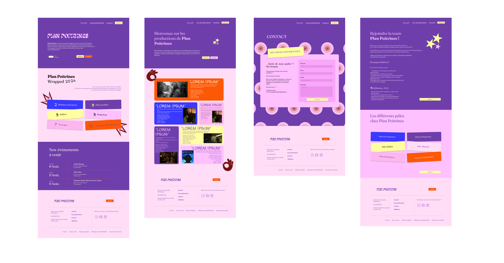
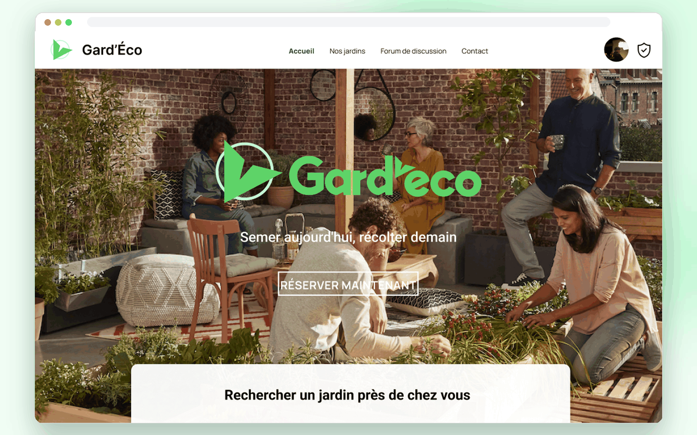
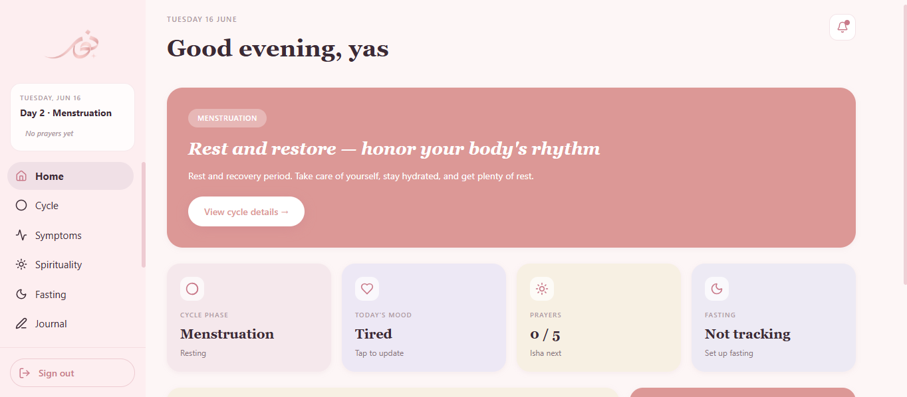
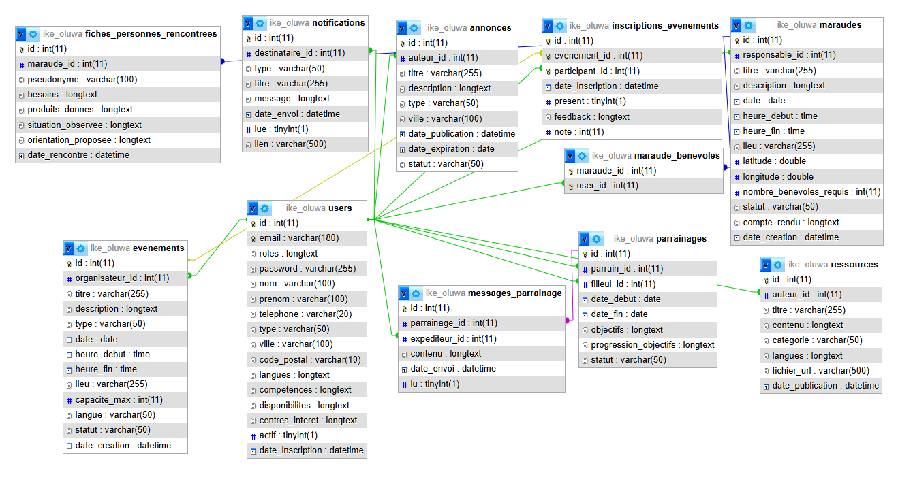
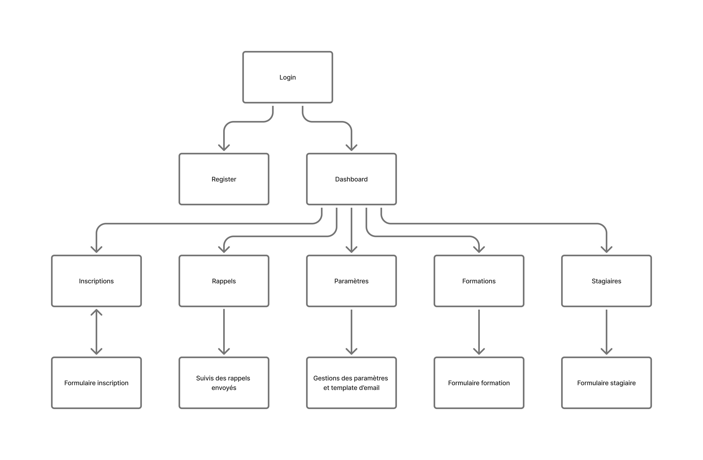
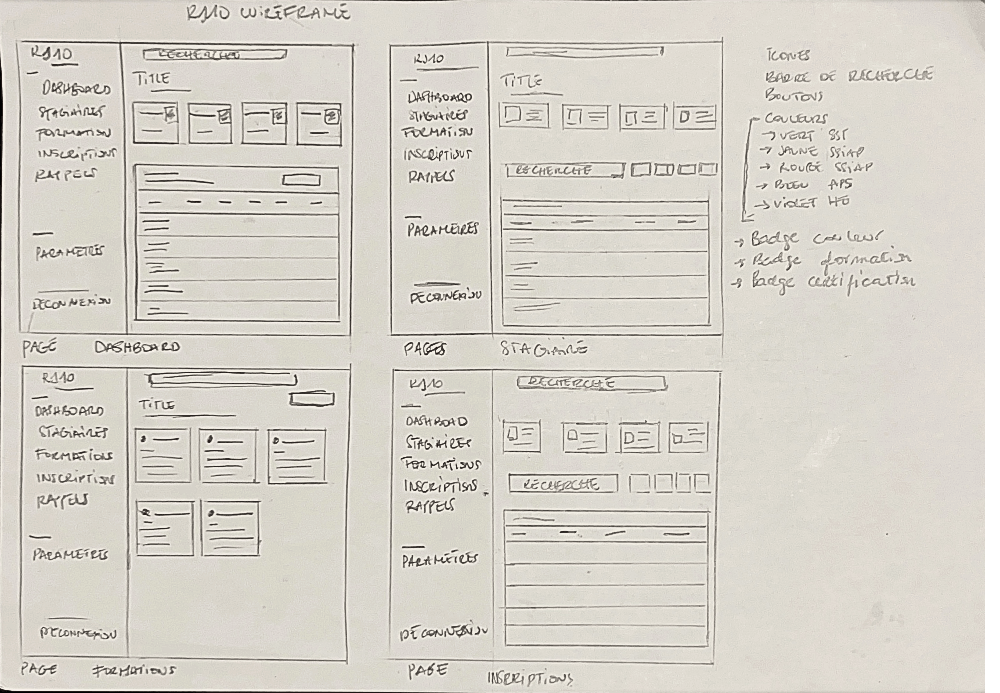
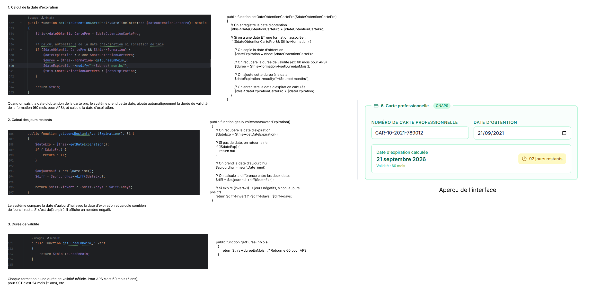
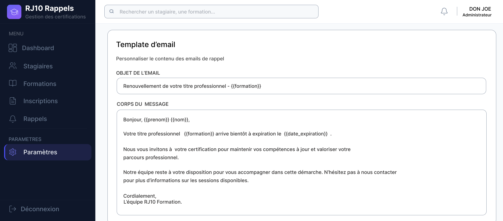

Je conçois des parcours et des interfaces web, de l'arborescence au prototype.
Diplômée d'un BUT MMI à l'IUT de Troyes. Je structure l'information, je dessine les écrans dans Figma, et je sais les intégrer : mes maquettes tiennent compte des contraintes techniques.
Architecture de l'information✦Parcours utilisateurs✦Wireframes✦Maquettes Figma✦Prototypes✦Responsive✦Architecture de l'information✦Parcours utilisateurs✦Wireframes✦Maquettes Figma✦Prototypes✦Responsive✦
Études de cas
Projets UX/UI
Chaque étude détaille le contexte, les choix de conception et les livrables produits.

01Site associatif
Plan Poitrines
Conception du site vitrine d'un collectif audiovisuel inclusif, en pleine refonte d'identité : arborescence, wireframes puis maquette Figma validée avec les co-présidentes.
Rôle
UX/UI designer
Durée
8 semaines
Outil
Figma
Voir l'étude de cas

02Plateforme web
Gard'Éco
Une plateforme de jardinage partagé : trouver un jardin près de chez soi, réserver une parcelle ou proposer son propre terrain.
Support
Web & mobile
Outil
Figma
Livrables
Maquettes, prototype
Voir l'étude de cas
03Plateforme associative
Ike Oluwa — ACM
Conception de l'interface d'une plateforme de gestion associative utilisée par trois profils : bénévoles, bénéficiaires et bureau. Maraudes, événements culturels et parrainage réunis dans un seul outil.
Rôle
UX/UI designer
Support
Web & mobile
Outils
Figma, FigJam
Voir l'étude de cas

04Application mobile
Noor
Application PWA de bien-être et de pratique spirituelle. Deux univers à faire cohabiter sur un même écran, avec une navigation pensée pour un usage au pouce.
Rôle
Conception & dév.
Support
Mobile (PWA)
Outils
Figma, Vue.js
Voir l'étude de cas
Méthode
Comment je travaille sur un projet
01
Comprendre
Échanges avec les personnes concernées, analyse de l'existant et des outils déjà utilisés.
EntretiensBenchmark
02
Définir
Identifier les profils d'utilisateurs, leurs besoins et formuler le problème à résoudre.
ProfilsProblématique
03
Structurer
Organiser les contenus et les parcours avant de penser au visuel.
ArborescenceWireframes
04
Designer
Maquettes haute fidélité et prototype cliquable dans Figma, partagés pour validation.
MaquettesPrototype
05
Itérer & livrer
Ajuster selon les retours, puis préparer le passage au développement, ou intégrer moi-même.
RetoursIntégration
BUT MMI — IUT de Troyes
UX/UI design · Intégration web
À propos
Du développement web vers le design d'interface.
Diplômée d'un BUT Métiers du Multimédia et de l'Internet (parcours Développement web et dispositifs interactifs) à l'IUT de Troyes. Pendant mes stages, j'ai pris en charge la conception des interfaces, de l'arborescence aux maquettes Figma, avant leur développement.
Je m'oriente aujourd'hui vers le design UX/UI. Mon parcours technique me permet de concevoir des écrans réalistes à intégrer et d'échanger facilement avec les équipes de développement.
UX
Architecture de l'informationParcours utilisateursWireframingBenchmark
Conception et réalisation du site sous WordPress pour un client réel.
Catalogue produits avec affichage des prix et commande via un lien vers WhatsApp, sans paiement en ligne.
2026
9 semaines
Stage · BUT3
Conceptrice UX & développeuse web
Association ACM — action sociale et interculturelle · Épinay-sur-Seine
Recueil des besoins pour centraliser la gestion des maraudes, des événements culturels et du parrainage, jusque-là répartie entre tableurs et messageries.
Arborescence organisée autour de trois profils d'accès : bénévole, bénéficiaire, bureau.
Modélisation de la base de données et développement de la partie serveur, en tenant compte de la confidentialité des données de terrain.
2026
9 semaines
Stage · BUT3
Développeuse web — conception d'interface
RJ10 — centre de formation
Arborescence et wireframes d'un outil de suivi des certifications, pensé pour un administrateur non technique.
Tableau de bord permettant de repérer en un coup d'œil les titres proches de leur expiration.
Développement de l'application et des rappels automatiques par email, adaptés à chaque type de formation.
Avr. – juin 2025
8 semaines · télétravail
Stage · BUT2
UX/UI designer & intégratrice web
Plan Poitrines (ex-Black Sheep) — collectif audiovisuel
Arborescence du site en quatre pages, définie et validée avec les deux co-présidentes.
Wireframes puis maquette Figma, dans un contexte de refonte de l'identité visuelle de l'association.
Intégration responsive en HTML/CSS et mise en ligne provisoire pour recueillir les retours de l'équipe.
Formation
BUT Métiers du Multimédia et de l'Internet
IUT de Troyes · Parcours Développement web et dispositifs interactifs
2023 – 2026
Côté code
Projets de développement
Stages et projets universitaires où j'ai développé les interfaces et la partie serveur.
Application web
RJ10 Rappel
Rappels automatiques pour le renouvellement des certifications professionnelles.
Symfony 7Vue.js 3
Site vitrine
Plan Poitrines — Vitrine
Intégration responsive du site à partir de la maquette Figma.
HTML5CSS3

Plateforme associative
Ike Oluwa — Back-end
Modélisation et développement serveur de la plateforme associative.
PHPSQL
API web
WR506D — Search Films
API Symfony avec GraphQL, authentification JWT et double authentification.
Symfony 7GraphQL
Application web
WR602D — Micro-services
Génération de PDF via Gotenberg et abonnements Stripe.
Des rappels automatiques pour le renouvellement des certifications professionnelles.
Rôle
Conception & développement
Durée
9 semaines · 2026
Outils
Symfony 7, Vue.js 3
Structure
RJ10 Formation
01
Contexte
Un centre de formation aux métiers de la sécurité. Son logiciel de gestion ne prévenait pas les anciens stagiaires de l'expiration de leur titre.
APS, SSIAP, SSTTravail en autonomieFidélisation
02 · Problème
Comment relancer automatiquement les anciens stagiaires avant l'expiration de leur certification ?
03
Processus

ArborescenceUn accès administrateur organisé autour des stagiaires et des formations.DonnéesUne durée de validité propre à chaque formation : 5, 3 ou 2 ans.
04
Wireframes
Chaque page, écran par écran.

05
Interface
Les titres proches de l'expiration ressortent en un coup d'œil.
Formations

Inscription
06
Mockups
Le projet en situation, sur ordinateur et sur mobile.
07
Détails
Zoom sur les choix d'interface.

Email de relanceUn message adapté à chaque formation.RappelsLa planification des relances.
08
Bilan
Difficulté
Travailler seule, sans interlocuteur technique.
Ce que j'en retiens
Consacrer plus de temps à l'analyse du métier avant d'écrire du code.